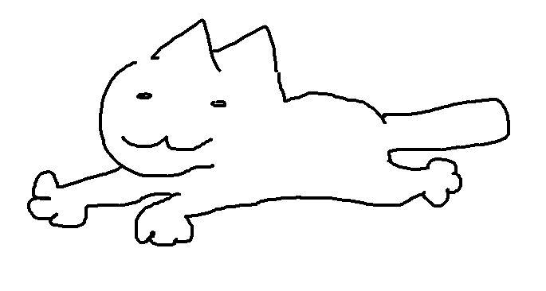

Informações
Aqui conto um pouquinho sobre algumas espécies de gato.
O gênero Felis é formado por sete espécies, incluindo o gato doméstico. As outras seis espécies são:
- Gato da selva ou lince do pântano (F. chaus)
- Gato bravo de patas pretas (F. nigripes)
- Gato do deserto ou do Saara (F. margarita)
- Gato chinês do deserto (F. bieti)
- Gato montês europeu (F. sylvestris)
- Gato silvestre africano (F. lybica)
Existem 71 raças padronizadas de gatos, segundo a Associação Internacional de Gatos.